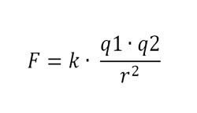

Salir
Introduccion
¿Qué es la Ley de Coulomb?>
La ley de Coulomb se emplea en el área de la física para calcular la fuerza eléctrica que actúa entre dos cargas en reposo. A partir de esta ley se puede predecir cuál será la fuerza electrostática de atracción o repulsión existente entre dos partículas según su carga eléctrica y la distancia que existe entre ambas. La fórmula para la ley de Coulomb se expresa de la siguiente forma:

F es la fuerza eléctrica y se expresa en Newtons (N), esta puede ser de repulsión o atracción. k es la constante dieléctrica de proporcionalidad y su valor es aproximadamente de 9·109 N·m2/C2. q1 y q2 son los valores de las carga eléctricas 1 y 2, el cual es medido en Coulomb (C). r2 es la distancia entre las dos cargas y su valor se da en metros (m).